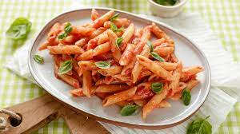

Penne al pomodoro
Ingredienti
Di seguito riportiamo gli ingredienti per preparare il nosro piatto
- penne 500g
- pomoodori 800g
- olio extravergine di oliva 2cucchiai
- Aglio e spicchi,Erbe aromatiche
Preparazione
- Mettere sul fuoco una pentola contenente acqua
- Soffriggere aglio ed erbe aromatiche
- 100g di pancetta
- il vostro piatto sarà pronto